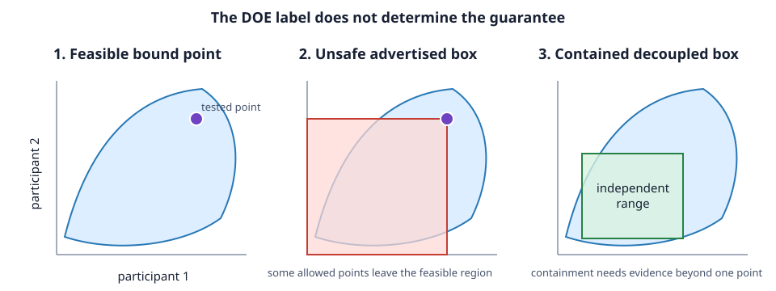

Dynamic operating envelopes in 15 minutes
<!– doe-executable –>
All Julia blocks on this page run in order from the repository root. CI executes the exact blocks with julia --project=. scripts/run_doe_tutorials.jl.
Audience: power-systems researchers and PhD candidates familiar with steady-state power flow; no robust-optimization background is assumed
Learning outcome: calculate two allocations and explain exactly why they support different network-security claims
Model: self-contained synthetic four-wire feeder, nonlinear AC
Runtime: under one minute after Julia compilation · Data: CC0 synthetic
A dynamic operating envelope is useful only when its operational promise is clear. This tutorial starts with the central distinction:
A feasible simultaneous operating point is not automatically an independently usable range for every participant.

1. Load the teaching case
Run Julia from the repository root:
using PowerOptLab
include("scripts/cases/doe_range_benchmark.jl")
case = doe_benchmark_case()
net = case.nets
cps = case.connection_pointsThe case has one connection on each phase, equal 20 kW nameplates, and a tight negative-sequence-voltage limit. Equal simultaneous export remains balanced; unequal utilization creates voltage unbalance. The complete network data remain inspectable in the case file, but they are not needed to understand the first experiment.
Before solving, predict which calculation should allocate more capacity:
- testing only equal simultaneous export; or
- requiring every zero/full combination of the three connections.
2. Calculate a bound point
bound = solve_operating_envelope(
net, cps;
fairness=:equal,
security=:bound_point,
control_policy=PerfectRecourse())
bound.total_capacity[1]
bound.diagnostics[1]["security_scope"]
bound.diagnostics[1]["global_certificate"]This optimization represents one participant-utilization vector: $u=(1,1,1)$. Its permitted claim is:
A locally feasible simultaneous upper-bound point was found for the declared nonlinear AC model.
PerfectRecourse() is explicit even though this case has no free network controller. Keeping it visible prevents a later tap or STATCOM from silently changing the formulation.
3. Calculate a corner-tested allocation
corners = solve_operating_envelope(
net, cps;
fairness=:equal,
security=:corners,
control_policy=IssuePlusLocalLaws())
corners.total_capacity[1]
corners.diagnostics[1]["security_scope"]
corners.diagnostics[1]["dispatch_points_per_scenario"]
corners.diagnostics[1]["global_certificate"]The three-participant box has eight zero/full corners. The corner-secure allocation is much smaller because it must tolerate asymmetric phase use. Its permitted claim is:
A locally feasible allocation was found at all eight represented corners under one issue-time control policy plus declared local laws.
It is still not a continuous nonlinear box-containment certificate. A nonconvex feasible set can, in principle, contain all corners but exclude an interior point.
4. Read every result through six questions
Do not start with the capacity number. Ask:
| Question | Where to look |
|---|---|
| What object was allocated? | connection declarations, direction, and geometry |
| Which utilization points were represented? | security_scope and dispatch-point count |
| Which network realizations were represented? | scenario provenance and count |
| Which controls could adapt, and when? | control_policy and control_audit |
| What numerical evidence succeeded? | termination, primal status, margins, and replay |
| What claim is permitted? | global_certificate plus the evidence ladder below |

The first two steps are useful scientific evidence. They simply answer weaker questions than a robust certificate.
5. Preserve the experiment
Run the committed comparison and write machine-readable rows:
julia --project=. scripts/run_doe_benchmark.jl \
scripts/cases/doe_range_benchmark.jl \
results/doe-range.tsvEach method receives its own DOEStudySpec identity containing network hashes, connection declarations, control and fairness policies, solver options, seeds, software versions, and the fixture's claim limitation.
What this experiment teaches
- DOE is a family of operational objects, not one algorithm.
- Allocation, testing, and certification are different activities.
- Security coverage and control recourse are independent modelling axes.
- A larger number is not stronger evidence.
- The result should state what was tested before it states what was allocated.
What this does not prove
- It does not reproduce a field feeder or the published 2.91 kW counterexample.
- It does not show that corners are always worst cases.
- It does not attach a violation probability to either allocation.
- It does not establish global AC feasibility or optimality.
- It does not compare alternative uncertainty or fairness objectives.
Continue by research question
- To see the range failure and adaptive search in detail, continue with What does a DOE guarantee?.
- To compare information structures, continue with Control recourse and reproducible verification.
- To design calibration and test scenarios, continue with DOE scenario design and held-out evaluation.
- To select a formulation before writing code, use Choosing a DOE formulation.
- For definitions and result fields, use the DOE problem specification.